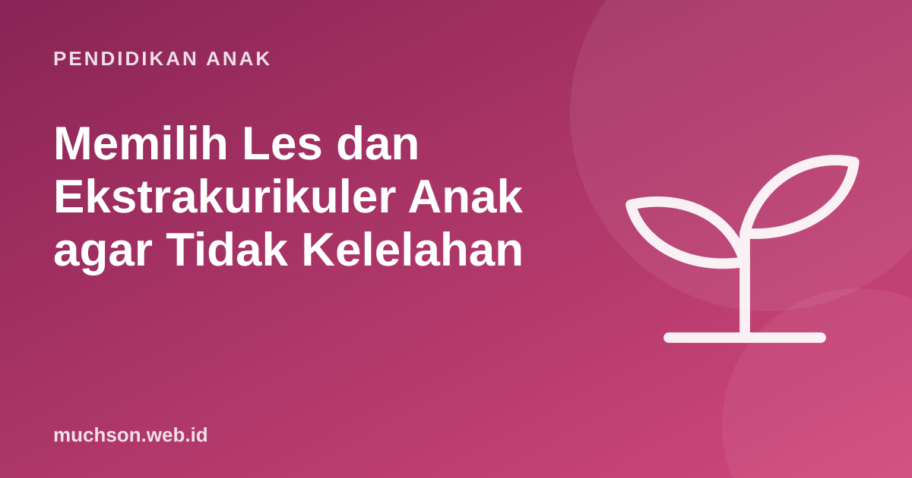

Beranda › Artikel › Pendidikan Anak
Pendidikan AnakMemilih Les dan Ekstrakurikuler Anak agar Tidak Kelelahan
Les matematika, les bahasa Inggris, renang, piano, robotik, mengaji, ditambah ekstrakurikuler di sekolah. Niatnya baik: memberi anak kesempatan sebanyak mungkin. Namun jadwal yang terlalu padat bisa membuat anak lelah, kehilangan waktu bermain, dan justru menurunkan semangat belajar. Berikut cara memilih dengan bijak.

Mulai dari pertanyaan "kenapa"
Sebelum mendaftarkan anak ke les atau kegiatan baru, jawab tiga pertanyaan:
- Untuk apa? Mengejar ketertinggalan, mengembangkan minat, atau karena teman-temannya ikut?
- Siapa yang ingin? Anak sendiri, atau terutama orang tua?
- Apa yang dikorbankan? Waktu bermain, tidur, atau waktu keluarga?
AAP dalam laporan The Power of Play mengingatkan bahwa jadwal anak yang terlalu terstruktur bisa menggeser waktu bermain bebas, padahal bermain penting untuk perkembangan sosial, emosional, dan kemampuan mengatur diri.
Jaga keseimbangan ranah
| Ranah | Contoh | Manfaat utama |
|---|---|---|
| Gerak | Renang, sepak bola, bela diri, tari | Kesehatan, koordinasi, kerja sama tim |
| Seni | Musik, menggambar, teater | Ekspresi, kesabaran, kreativitas |
| Akademik | Les mata pelajaran | Menutup celah materi |
| Teknologi | Coding, robotik | Logika, pemecahan masalah, berkarya digital |
| Spiritual dan sosial | Mengaji, sekolah minggu, pramuka | Nilai, kebersamaan |
Untuk anak SD, satu atau dua kegiatan di luar sekolah biasanya sudah cukup, idealnya dari ranah berbeda. Satu kegiatan gerak dan satu kegiatan minat (seni atau teknologi) adalah kombinasi yang seimbang.
Hitung beban mingguan anak
Tanda jadwal terlalu padat
Memilih tempat les yang baik
- Coba dulu. Ikut kelas percobaan dan perhatikan reaksi anak setelahnya.
- Ukuran kelompok. Kelompok kecil memungkinkan perhatian dan umpan balik.
- Cara mengajar. Anak aktif mengerjakan, bukan hanya mendengarkan.
- Transparansi. Materi, biaya, dan cara berhenti jelas.
- Jarak dan waktu. Waktu perjalanan adalah biaya tersembunyi yang besar.
Kapan berhenti?
Berhenti dari les tidak selalu berarti gagal. Bila setelah memberi waktu yang cukup (misalnya satu semester) anak tetap sangat tidak menikmati kegiatan itu, dan tidak ada alasan kuat untuk melanjutkan, berhenti dan mencoba hal lain adalah keputusan yang sehat. Ajak anak merefleksikan: apa yang ia pelajari, dan kenapa ia ingin berhenti.
Bila coding termasuk pilihan, kelas daring dari rumah dapat menghemat waktu perjalanan. PixelKode menyarankan dua pelajaran 45-60 menit per minggu, dan paket berbayarnya tidak diperpanjang otomatis sehingga mudah dihentikan bila tidak cocok.
Tanya jawab
Berapa banyak les yang ideal untuk anak SD?
Bagaimana tahu anak kelelahan karena les?
Apakah anak boleh berhenti les?
Les apa yang paling penting?
Sumber dan bacaan lanjut
- Yogman, M. dkk. (2018). The Power of Play. Pediatrics
- Paruthi, S. dkk. (2016). Rekomendasi jumlah tidur anak (AASM)
- WHO (2020). Guidelines on physical activity and sedentary behaviour